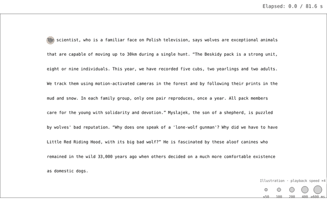
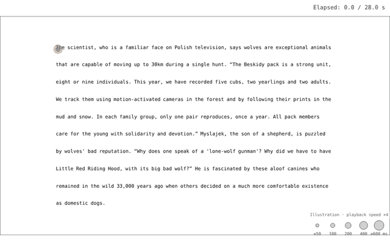

Eye Tracking Based Cognitive Evaluation of Automatic Readability Assessment Methods
Faculty of Data and Decision Sciences, Technion – Israel Institute of Technology
Computational Linguistics, 2026 · Presented at EMNLP 2026
TL;DRReadability scores, from 1948 formulas to frontier LLMs, are poor predictors of reading ease measured with eye tracking. Psycholinguistic measures, especially surprisal, do better.
Abstract
Automatic methods for scoring text readability have been studied for over a century, and are widely used in research and in user-facing applications in many domains. Thus far, the development and evaluation of such methods have primarily relied on two types of offline human behavioral data, performance on reading comprehension tests and ratings of text readability levels. In this work, we instead focus on a fundamental and understudied aspect of readability, real-time reading ease, captured with online reading measures using eye tracking. We introduce a new cognitive evaluation framework for readability scoring methods that quantifies their ability to account for reading ease, while controlling for content variation across texts. Applying this evaluation to prominent traditional readability formulas, NLP-based methods, commercial systems used in education, and frontier LLMs suggests that they are all poor predictors of English reading ease in adults as compared to word properties commonly used in psycholinguistics for the prediction of reading times. This outcome holds across L1 and L2 speakers, different reading regimes, and textual units of different lengths. Our results reveal an important limitation of a wide range of methods for readability scoring, highlight the utility of real-time behavioral benchmarks for readability research, and call for new, cognitively driven readability scoring approaches that can better account for how humans experience texts in real time.
Reading Behaviour
Two readers of the same paragraph, both answering the comprehension question correctly. Replays at 4× speed with Scanpath Studio.


Scanpath Studio · Replay Eye-Tracking Trials
Same answer, very different reading. Comprehension tests and ratings miss what happens while people read.
Method
Across all text pairs: how well each method reflects reading ease. Δ = original − simplified.
Example
Illustrative numbers.
Results

Readability Methods
Traditional formulas, NLP models, commercial systems and LLMs, from 1948 to 2025, are weak and mostly not significant predictors of reading ease.
Psycholinguistic Measures
Psycholinguistic measures used to predict reading times do better. Surprisal is the best predictor overall.
Data
OneStop: 360 native and 278 non-native English speakers reading 162 original and simplified paragraph pairs with eye tracking.
Robustness
Readers
Native & non-native English speakers
Reading Regimes
Reading for comprehension & information seeking
Text Units
Sentences & paragraphs
Takeaways
- Existing readability scores may not reflect reading ease.
- Surprisal is a simple, strong baseline.
- Next readability measures should reflect reading ease.
BibTeX
@article{grutekeklein2026eye,
title = {Eye Tracking Based Cognitive Evaluation of Automatic Readability Assessment Methods},
author = {Gruteke Klein, Keren and Frenkel, Shachar and Shubi, Omer and Berzak, Yevgeni},
journal = {Computational Linguistics},
year = {2026},
doi = {10.1162/COLI.a.649},
url = {https://doi.org/10.1162/COLI.a.649}
}